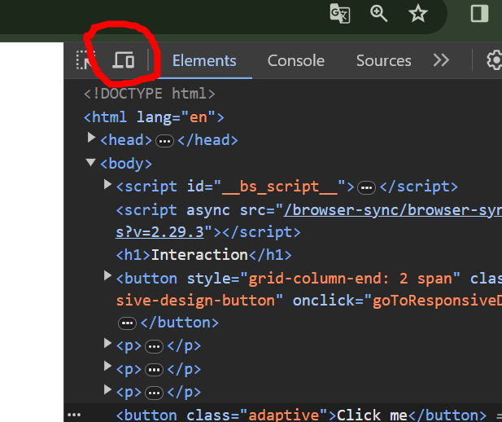

Various devices can be used to display the page, and so different devices are used to interact with website. One example is pointer - on mobile phones the pointer is not as exact as in computer.
pointer and any-pointer media feature
queries
To adapt the CSS to pointer used, we can use media feature query
pointer and any-pointer.
To see the results of examples, go to DevTools, switch to mobile phone view (toggle the device toolbar), so different pointer will be reported to browser:

Below button will have different width and padding, making it easier
for devices with touch screens (pointer: coarse).
Below button will have different padding, making it easier for
devices with touch screens (any-pointer: coarse). For
example, when laptop has touch screen (so has coarse and fine
pointers), coarse is returned.
hover and any-hover media feature query
Reports whether hovering is possible (so not in touch screens).
Usage: @media (hover: hover), other value it can take
is none.
I will have red dotter border if hover is possible on this device.
Also I have hover effect.
hover will report whether primary device is capable of
hovering, while any-hover will report true if any of
the devices is capable of hovering.
To control how to virtual keyboard appears (for example on-screen
keyboard on smart phones). This is especially relevant when it comes
to input elements. There are attributes to control that
behavior: type, inputmode and
autocomplete.
inputmode and typeFor example:
<label for="age">Age</label>
<input type="number" id="age" inputmode="numeric">
or to allow decimal values
<label for="price">Price</label>
<input type="number" id="price" inputmode="decimal">
autocomplete
Attribute autocomplete can be used with many options to
enhance autocomplete in inputs, for example
<label for="email">Email</label>
<input type="text" id="email" autocomplete="email">